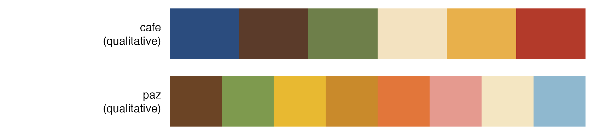
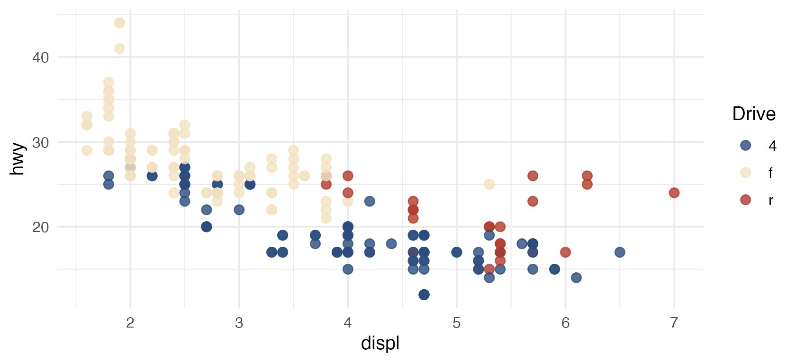
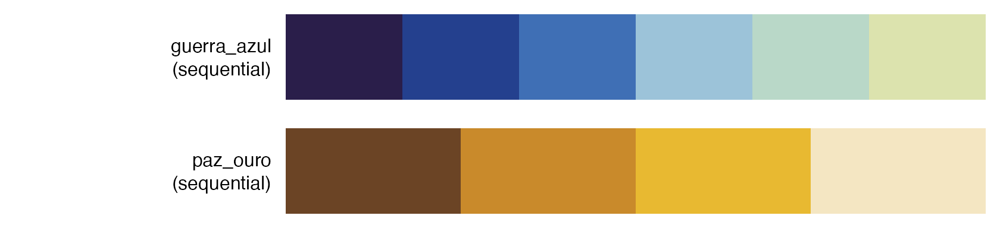
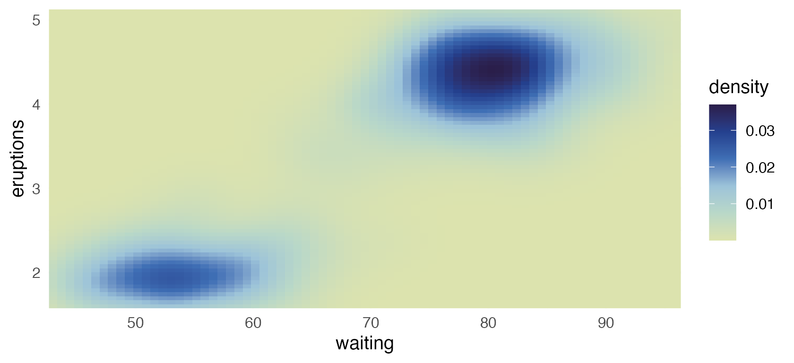
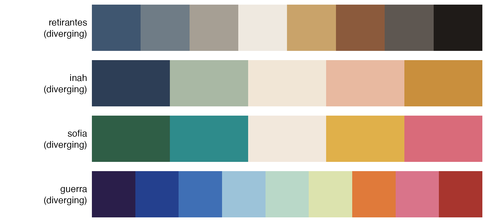
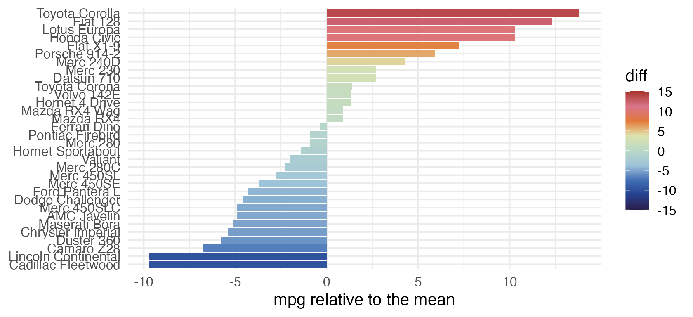
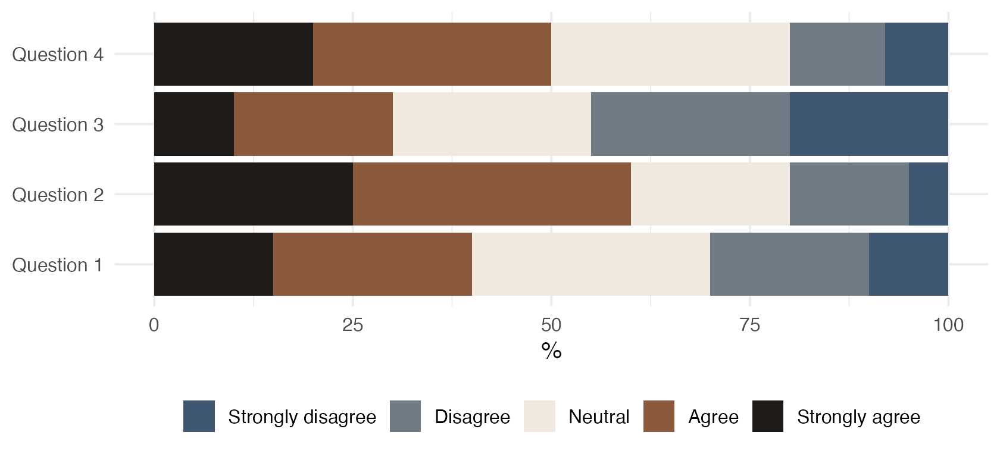

Like RColorBrewer and MetBrewer, PortinariColors groups its palettes by the kind of data they suit.
portinari.palettes()[, c("palette", "category", "n_colors", "cvd_n")]## palette category n_colors cvd_n
## 1 cafe qualitative 6 6
## 2 paz qualitative 8 4
## 3 retirantes diverging 8 8
## 4 inah diverging 5 4
## 5 sofia diverging 5 3
## 6 guerra diverging 9 9
## 7 guerra_azul sequential 6 6
## 8 paz_ouro sequential 4 4Qualitative: unordered groups
Distinct hues with no implied order. Asking for n colors
returns the n most distinct ones.
show_portinari(category = "qualitative")
ggplot(mpg, aes(displ, hwy, colour = drv)) +
geom_point(size = 2.5, alpha = 0.8) +
scale_color_portinari("cafe", name = "Drive")
Sequential: ordered values
Colors run from dark to light. Discrete subsets keep both ends and space the rest evenly.
show_portinari(category = "sequential")
ggplot(faithfuld, aes(waiting, eruptions, fill = density)) +
geom_raster() +
scale_fill_portinari("guerra_azul", type = "continuous", direction = -1) +
coord_cartesian(expand = FALSE)
Diverging: values around a midpoint
Two dark arms meet in a light centre, so the middle of the scale reads as neutral. Discrete subsets take both ends, then the centre, then fill each arm evenly.
show_portinari(category = "diverging")
cars <- transform(mtcars, car = rownames(mtcars), diff = mpg - mean(mpg))
ggplot(cars, aes(diff, reorder(car, diff), fill = diff)) +
geom_col() +
scale_fill_portinari("guerra", type = "continuous", limits = c(-15, 15)) +
labs(x = "mpg relative to the mean", y = NULL)
likert <- data.frame(
question = rep(paste("Question", 1:4), each = 5),
answer = factor(rep(c("Strongly disagree", "Disagree", "Neutral", "Agree", "Strongly agree"), 4),
levels = c("Strongly disagree", "Disagree", "Neutral", "Agree", "Strongly agree")),
share = c(10, 20, 30, 25, 15, 5, 15, 20, 35, 25, 20, 25, 25, 20, 10, 8, 12, 30, 30, 20)
)
ggplot(likert, aes(share, question, fill = answer)) +
geom_col() +
scale_fill_portinari("retirantes", name = NULL) +
labs(x = "%", y = NULL) +
theme(legend.position = "bottom")
Colorblind safety
colorblind = TRUE restricts any palette to colors that
stay distinct under protanopia, deuteranopia and tritanopia
simulation.
portinari.pal("sofia", colorblind = TRUE)## <Portinari palette 'sofia'> 3 colors
## [1] "#2F5E46" "#F2E8DC" "#D96B7A"
portinari.cvd.check("sofia")## n normal protanopia deuteranopia tritanopia colorblind_safe
## 1 2 70.64010 18.331205 28.30175 82.36919 TRUE
## 2 3 55.02795 18.331205 28.30175 62.42223 TRUE
## 3 4 24.12647 7.530853 23.95855 21.86508 FALSE
## 4 5 24.12647 7.530853 23.95855 21.86508 FALSE